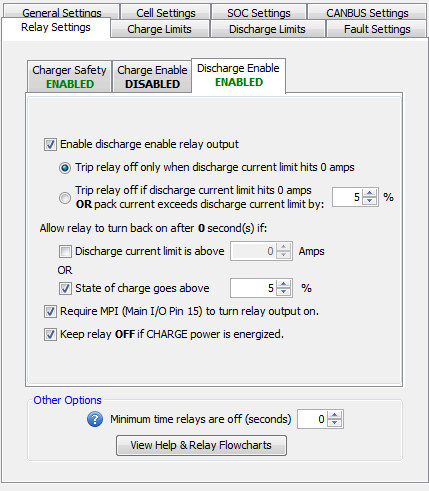

If enabled, this relay signal will be driven low until the DCL (Discharge Current Limit) dips to 0 at which point it will float high (there is no pull-up resistor on the line). This relay can re-engage based on either State of Charge (SOC) or Discharge Current Limit (DCL).
Requiring MPI to turn the relay on means that the BMS will not allow the Discharge Current Limit (DCL) to go above 0A unless the Multi-Purpose Input signal (pin 15 on the Main I/O harness) is energized to at least +12v. This can be used to prevent a vehicle from driving off unless the Multi-Purpose Input is energized.
Turning the relay off if CHARGE power is energized means the BMS will not allow the Discharge Current Limit (DCL) to go above 0A if the Charge Power (pin 4 on Main I/O harness) is energized to at least +12v. This can be used to prevent a vehicle from driving away if the Charge Power signal is still energized (ie: if the vehicle is in drive but is still plugged in).
NOTE: Enabling this relay will extend the amount of time it takes for the BMS to set a Discharge Limit Enforcement fault once the Discharge Current Limit hits 0A to approximately 5 seconds. This is because the BMS is assuming it is controlling an application in an ON / OFF style where application may take a moment to turn off.
**Click here for a functional flowchart of how the relay works.
| < Charger Safety Functional Flowchart | Discharge Enable Functional Flowchart > |